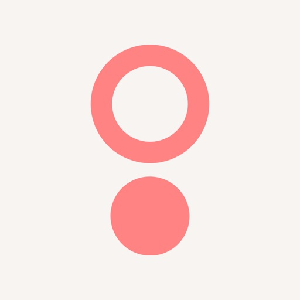
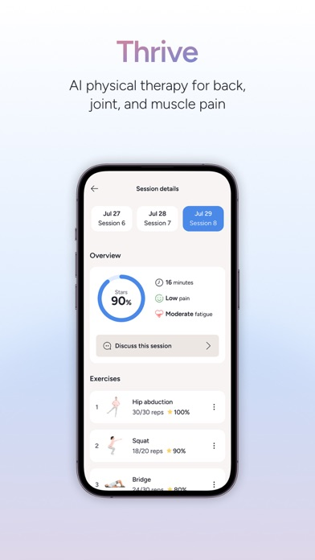
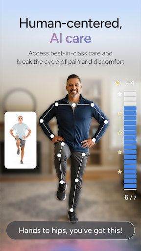

Recent iOS and Android reviews at three stars or below. The issue is concentrated, not random: communication noise, thread failures, setup friction, and device readiness.

Public reviews say the therapy itself works. The trust layer around setup, reminders, and therapist communication is where members start doubting the experience before they get the benefit.
Brittanie, this is squarely in your lane: member experience, implementation, care operations, and now the Kaia-to-Sword handoff. The opportunity is not more features. It is a cleaner activation system that protects the care model you are scaling.
Recent iOS and Android reviews at three stars or below. The issue is concentrated, not random: communication noise, thread failures, setup friction, and device readiness.
Low-score reviews explicitly mentioning texts, calls, emails, or notifications feeling excessive or poorly controlled. The member relationship can feel louder than the care itself.
Your current role already sits on migrations, workflows, and partner continuity. The cleaner the activation layer, the easier it is to carry trust through program change.
The strongest public opportunity is not new clinical content. It is a quieter, more reliable start: one contact lane, better readiness checks, and a therapist thread that behaves like care instead of support debt.

Official App Store session UI shows the core therapy product is already credible once members get inside. That is why the best wedge is activation trust, not a wholesale redesign.
“bombarded with messages and calls”
iOS 1-star review, 2026-03-04. Reminder pressure is showing up as annoyance and distrust.
“Aggressive Notification Tactics”
iOS 1-star review, 2026-01-26. Public feedback says channel volume feels invasive, not supportive.
“keeps emailing”
Android 2-star review, 2026-03-10. Even after disengagement, the product keeps chasing attention.
“crashes consistently when reading or trying to write messages”
Android 1-star review, 2026-02-28. The moment users actually need care-thread reliability, it can fail.
“wouldn’t let me login despite several password changes”
iOS 1-star review, 2026-03-12. The promise of immediate access breaks early in the journey.
“spinning wheel”
Android 3-star review, 2026-03-13. Members are still hitting start-up and loading friction after carving out session time.
The idea is simple: reduce channel overload, confirm readiness before exercise begins, and make the therapist thread feel dependable. Same care model. Less friction around entering it.
The member is asked to manage reminders, setup issues, and thread uncertainty before the session feels ready.
Today’s next session is ready, but 3 blockers need attention first.
The product picks one primary channel, clears readiness up front, and explains what will happen next before care begins.
2-minute trust check before Session 8
When something changes, the member sees therapist status, support fallback, and reminder controls in one calm place.
Your clinician for Thrive
If the in-app thread degrades, Sword automatically falls back to your chosen secure SMS lane with the same context attached.

Care stays anchored to the therapy moment, not to a separate support system the member has to interpret alone.
This is a practical mobile-delivery project, not a slideware idea. The work lives in orchestration, preferences, status visibility, thread reliability, and support-safe fallbacks.
One source of truth for reminder channels, escalation rules, quiet hours, and opt-down behavior across push, SMS, email, and calls.
A lightweight check that validates device, sync, thread status, and auth freshness before the member starts therapy.
Graceful degradation when messaging fails, plus clear instrumentation so ops teams can see where continuity breaks.
The concept works well during Kaia-to-Sword harmonization because it standardizes member-facing trust signals without changing the therapy model itself.
This prototype focuses on one narrow improvement: make the member trust layer feel deliberate before the care experience asks for time, attention, and health data. That is the kind of operational-mobile wedge Elinext can build quickly with a product team, not against it.